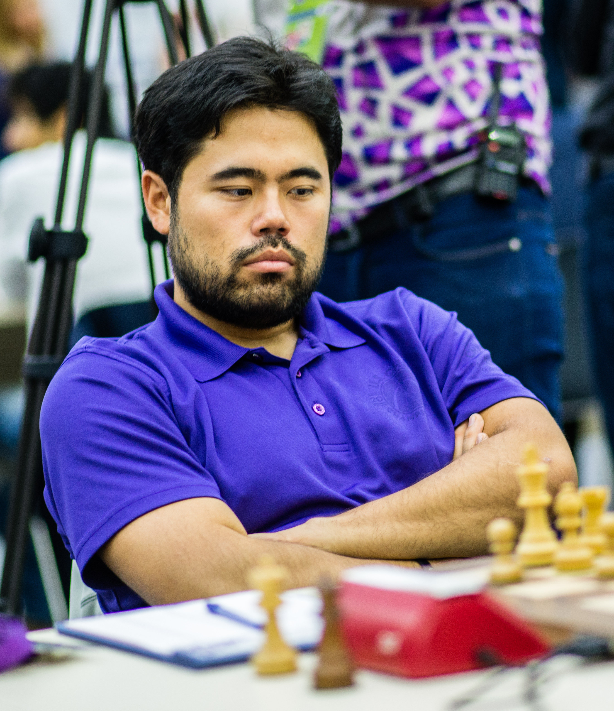
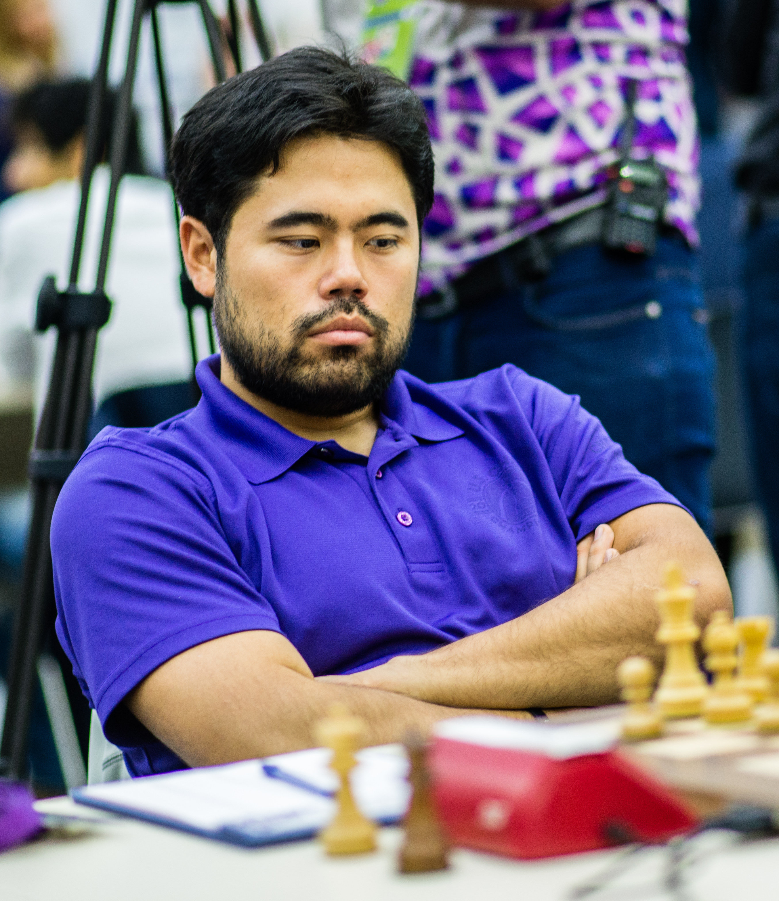

Benvenuto nel mondo degli Scacchi
Gli scacchi sono un gioco di strategia che ha affascinato giocatori per secoli. Dal leggendario Bobby Fischer all'attuale campione del mondo Magnus Carlsen, fino alle stelle di internet come Hikaru Nakamura, gli scacchi continuano a evolversi.
 
